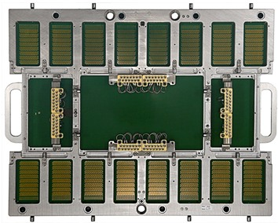
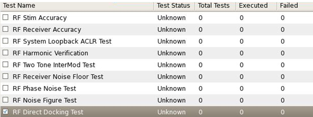

Direct-Probe RF Interconnect Board
The purpose of Direct Probe™ Interconnect Board (N2498A-300) is to verify cables and cabling of the Direct-Probe™ solution. This is achieved by measuring loop back signals. Supported is the Advantest standard cabling configuration of the Direct-Probe™ solution only.

The Direct Probe™ Interconnect Board comes pre-configured for 48 ports. For an upgrade to 96 ports following upgrade kit is needed: N2498A-301.
To execute the RF Direct Docking Test select the test in the Trace Verification window.

Functional changes
- Introduced in SmarTest 7.1.4